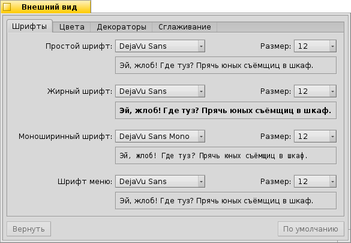
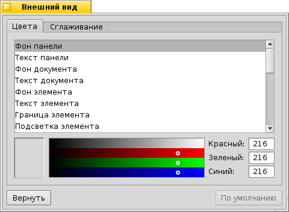
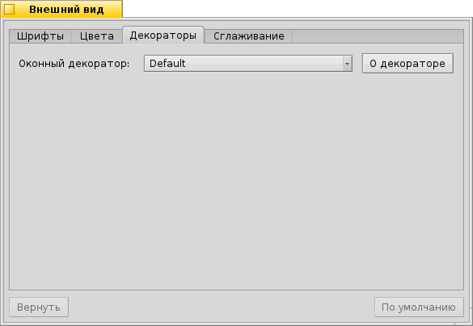
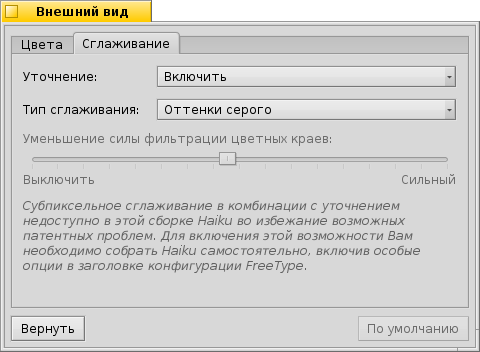

Русский
Русский Català
Català Deutsch
Deutsch English
English Español
Español Français
Français Italiano
Italiano Magyar
Magyar Polski
Polski Português
Português Português (Brazil)
Português (Brazil) Română
Română Slovenčina
Slovenčina Suomi
Suomi Svenska
Svenska 中文 ［中文］
中文 ［中文］ Українська
Українська 日本語
日本語 Внешний вид
Внешний вид
| Расположение в Deskbar: | ||
| Расположение в Tracker: | /boot/system/preferences/Appearance | |
| Настройки хранятся по адресу: | ~/config/settings/system/app_server/appearance ~/config/settings/system/app_server/fonts |
С помощью панели настройки Внешний вид вы сможете изменить некоторые свойства внешнего вида Haiku.
 Шрифты
Шрифты

Haiku определяет 3 стандартных шрифта для различных целей. Вы можете установить простые, жирные и моноширинные типы шрифтов, а также размеры, которые будут использованы во всей системе. Кроме этого есть еще отдельная настройка для шрифта, использующегося в меню.
Установка новых шрифтов
Новые шрифты, не являющиеся частью стандартного пакета .hpkg, могут быть установлены путем их копирования в соответствующую папку non-packaged в зависимости от их типа (psfonts или ttfonts) (см. также раздел Структура файловой системы). Для шрифтов TrueType это:
| /boot/system/non-packaged/data/fonts/ttfonts/ | для шрифтов, доступных каждому пользователю. | |
| /boot/home/config/non-packaged/data/fonts/ttfonts/ | для шрифтов, доступных лишь вам. |
Цвета

На вкладке вы можете изменять цвет различных элементов интерфейса. Метод drag&drop позволит вам указать нужный цвет из других программ, таких как WonderBrush, Icon-O-Matic или панели Фон.
Декораторы окон

Декораторы определяют внешний вид окон и всех элелементов пользовательского интерфейса. Сейчас Haiku имеет по умолчанию только один декоратор. Если Вы найдете и установите другие декораторы, Вы сможете выбрать их в данном меню.
Базовый декоратор Haiku позволяет вам настроить стиль стрелок у полосы прокрутки: либо одна стрелка с каждой стороны, либо две (как у BeOS), позволяющие потенциально уменьшить движение мыши при горизонтальной или вертикальной прокрутке.
Сглаживание

Вторая вкладка, , позволяет настроить способ отображения текста на экране.
Уточнение
Включенный режим выравнивает символы таким образом, что их вертикальные и горизонтальные границы будут располагаться между двумя пикселями. Результатом чего будет превосходная контрастность символов, особенно в случае черного текста на белом фоне. Текст становится более четким. Так же этот режим можно применить исключительно для , что особенно полезно на устройствах с низким разрешением, таких как нетбуки. Когда уточнение включено, мелкие шрифты могут выглядеть довольно-таки плохо, но этот режим все же позволит получить выгоду от уточнения в текстовых редакторах и в Terminal.
Заметить разницу, вносимую уточнением, можно, сравнив эти увеличенные снимки экрана:
 Уточнение: выключено |  Уточнение: включено |
Следует отметить, что текст во всех окнах Magnify на этой странице, разумеется, отображается с различными параметрами уточнения. То есть Вы можете сравнить результаты настройки на реальном примере: заголовок окна, набранный полужирным шрифтом, или же надпись "33 x 15 @ 8 pixels/pixel".
Тип сглаживания
Другой техникой улучшения отображения графики и текста является Сглаживание. Линии сглаживаются за счет смены цвета некоторых пикселей. Применяются два метода сглаживания:
- меняет интенсивность цвета пикселя на границе.
, гораздо более эффективно, особенно на ЖК-мониторах (высокого разрешения). При таком сглаживании меняется не интенсивность цвета пикселя, а его оттенок, "устанавливающий" границу элемента на доли пикселя, за счет того, что ЖК-мониторы используют красную, зеленую и синюю компоненту для отображения каждого пикселя.
И снова сравним два этих метода на увеличенных снимках экрана:
Оттенки серого: включено, Уточнение: выключено | Субпиксельное сглаживание: включено, Уточнение: выключено |
Субпиксельное сглаживание добавляет цветные артефакты на границах объектов, что врядли кому-то понравится. Haiku позволяет вам одновременно использовать оба метода сглаживания - перемещая бегунок, вы сможете найти их приемлемое соотношение.
Если вы активируете уточнение с субпиксельным сглаживанием путем модификации и перекомпиляции исходного кода, то сможете сравнить результат со сглаживанием оттенками серого:
Оттенки серого: включено, Уточнение: включено | Субпиксельное сглаживание: включено, Уточнение: включено |
В нижней части панели располагаются две кнопки:
| сбросить текущие настройки и установить их на значения по умолчанию. | ||
| вернуть настройки, которые были установлены до запуска панели настройки. |